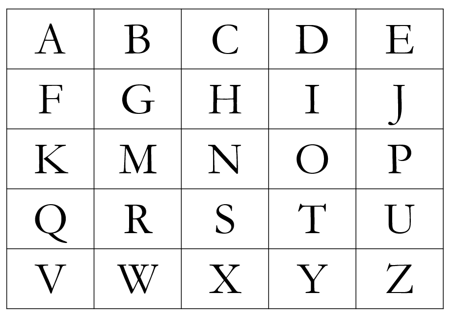
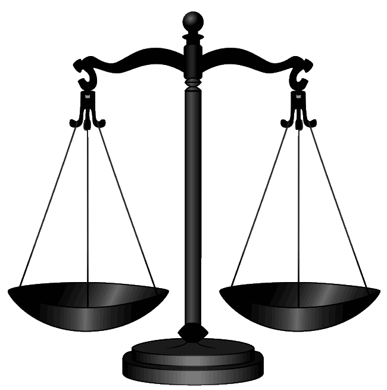

Welcome to Mr. Quibble's World!
About Mr. Quibble
Mr. Quibble is a character that my fourth grade teacher introduced to our class. Mr. Quibble would give us puzzles, what he called "quibbles," to our class. If any student correctly solved the quibble by the next day, they would get a point. If no one in the class was able to solve the quibble, the point would go to Mr. Quibble. At the end of the school year, the student with the most points would get a prize. As a tribute the fantastic Mr. Quibble, who taught a bunch of fourth graders to not only learn what was offered in class, but to think outside the box and continue thinking and wondering outside of class, here are some quibbles!
(If you would like to learn more about Mr. Quibble, you may email me at scarletholmes.221b@gmail.com)
If you want to check your answer or if you give up, go ahead and click on the title of the puzzle to see the answer :)
- Five squares to Four
- All the sticks must be used as part of a square.
- By squares, I mean boxes where each of the four sides is made up of one stick.
- It is indeed possible to do this. You can figure it out. I believe in you!
- Nine eggs
- Bring back christmas! 
- What's missing?
- Triangles
- Five bags

Given the picture, how would you move two lines to make four squares instead of five?
Do note these points though:

You have nine eggs and you know one of them is rotten. You also know that rotten eggs weigh lighter than not rotten eggs.
With only two uses of the scale, as shown, how would you arrange the weighing of the eggs to figure out which one of the nine is rotten?
I got this image from wikipedia. You can find it at this link.
It's only been a few months after Christmas, but don't you miss it already? Well, let's bring back some of it!
Here is a Christmas-themed quibble. We have a picture here of a grid of letters. Observing this grid, you should be able to come up with a Christmas related word. Can you figure out what word it is?
This is an annoying paragraph, in which you try and work out what is unusal about it. This paragraph has a quandry though. A solitary wod has found a way to slink into this paragraph, to fox your fun, by going against all my jazzy plans. What is that word? Don't try to run a utility to assist you, that would spoil all of my attempts to absorb all of your avid skills in this mind blowing prank.
In the picture, there are six circles placed in the shape of a pyramid. Using only two moves, make the pyramid face downward.
Note: This can be done in multiple ways.
There are five bags labeled one through five. The coins in those bags corresponds to the number written on the bags, but one bag contains fake coins. A real coin weighs 10 units, and a fake coin weighs one unit less. Knowing this, what is the fewest number of times you can use a scale registered up to 200 units to find the bag of fake coins and why?
Hey! You're a curious one, aren't cha? Well, I'm glad. I've got something just for people like you, but you'll have to work for it. You ready?